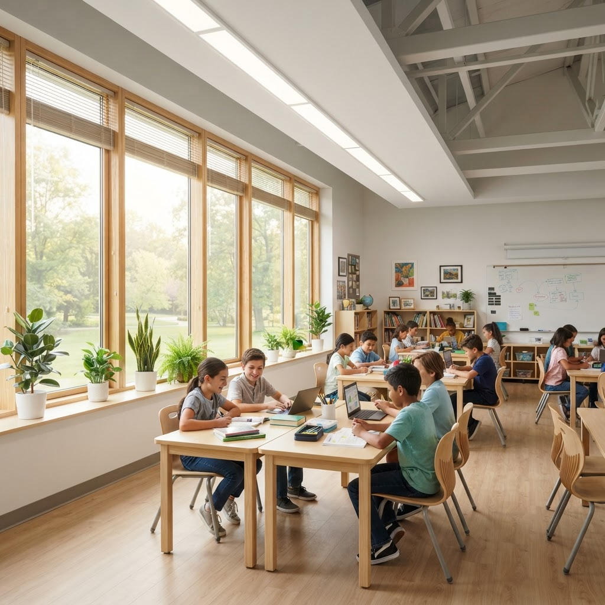
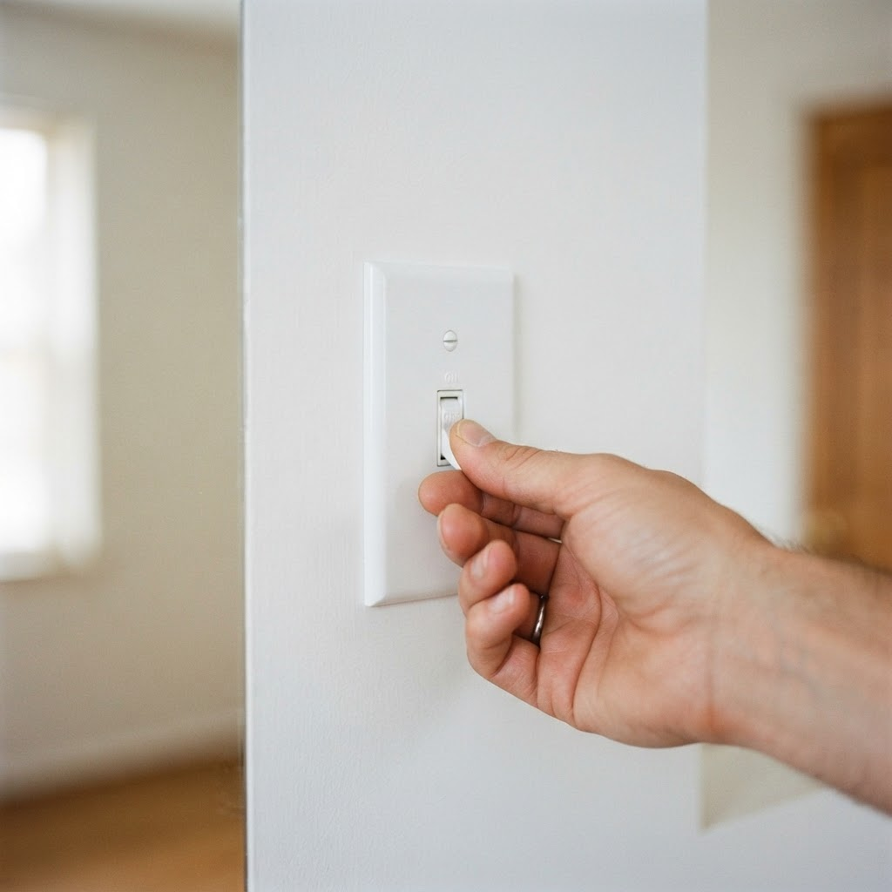

Tahap 1
Tumbuhkan Kesadaran
Mengenali pentingnya konservasi energi dan dampak pemborosan listrik di ruang kelas, lab komputer, dan lingkungan sekitar.
Matikan yang Tak Perlu, Gunakan Energi Secukupnya.
Perubahan besar berawal dari kebiasaan sederhana sehari-hari. Melalui data riil 636 siswa, kita tahu kebiasaan apa yang sudah baik dan titik lemah mana yang harus kita benahi bersama.

Website ini bukan sekadar laporan statistik, melainkan media persuasif yang mengajak seluruh warga sekolah bergerak bersama secara bertahap.
Mengenali pentingnya konservasi energi dan dampak pemborosan listrik di ruang kelas, lab komputer, dan lingkungan sekitar.
Menelaah grafik kuesioner 636 siswa untuk melihat perilaku mana yang sudah unggul dan celah pemborosan yang masih terjadi.
Menjalankan 5 rekomendasi konkret, menyelesaikan Tantangan 7 Hari, serta menerbitkan Kartu Komitmen Hemat Energi digital.

Penggunaan energi listrik yang tidak efisien menyumbang emisi gas rumah kaca serta meningkatkan beban tagihan sekolah. Banyak energi terbuang hanya karena charger dibiarkan tercolok seharian, laptop menyala saat ruangan kosong, dan lampu tetap hidup di bawah teriknya sinar matahari siang.
Hemat energi bukan berarti membatasi aktivitas belajar, melainkan menggunakan energi secara cerdas, bijak, dan secukupnya.
Kami tidak sekadar berasumsi. Kuesioner dengan 10 indikator perilaku hemat energi telah diisi oleh 636 siswa dengan tingkat partisipasi 99.4%.
Berdasarkan kelemahan yang ditemukan dari data, kami telah merumuskan solusi terarah yang bisa langsung Anda terapkan hari ini.
Aktifkan mode sleep saat jam istirahat dan turunkan kecerahan laptop di lab komputer.
Tepis rasa canggung antarteman dengan sistem piket pengingat saklar dan proyektor kelas.
Uji komitmen Anda melalui checklist interaktif harian dan cetak kartu ikrar digital pribadi Anda.
Perubahan besar dimulai dari tindakan kecil Anda: cabut charger, buka tirai, dan ingatkan kawan satu kelas.